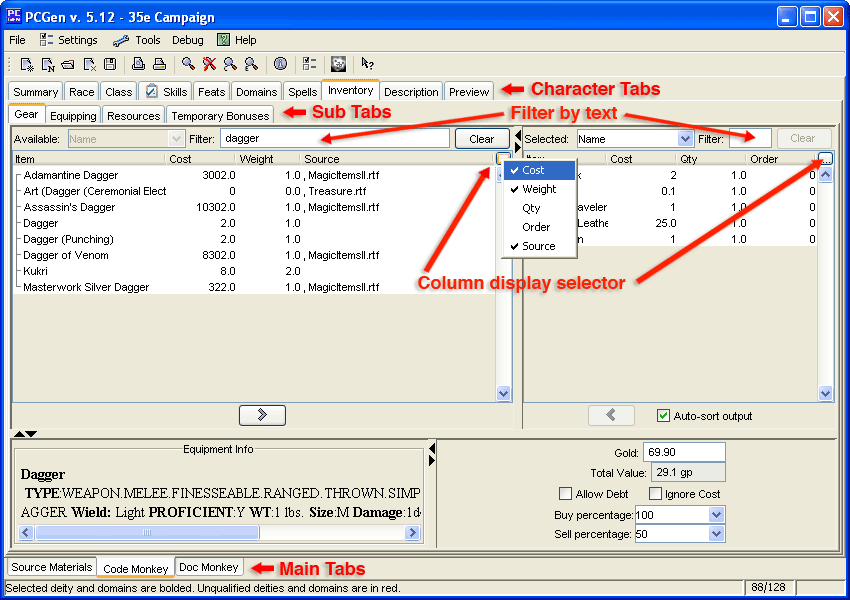

PCGen has a number of different Tab sets to help navigate between the different character creation screens:
Main Tabs:
These allow you to change between the Sources that you have loaded and the
different characters you are currently working on.
Character Tabs:
These only appear if a Character's Main tab has been selected. They allow you to move around and change the
character.
Sub Tabs:
When certain Character Tabs are selected, additional sub tabs will appear that
allow further navigation. (E.g. Inventory has Gear, Equipping, Resources and Temporary
Bonuses).
Click on the desired Tab with the mouse and the screen will change to display that section.